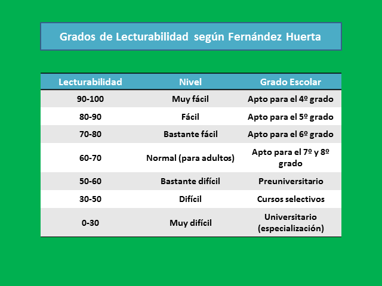

La prueba de legibilidad de Flesch-Kincaid es una herramienta esencial para evaluar la facilidad con la que se puede leer y comprender un texto. En el ámbito de la contabilidad, las finanzas y la gestión de riesgos, donde la precisión y la claridad son cruciales, esta prueba nos asegura que el contenido sea accesible para un público amplio, no solo para expertos en la materia.
A continuación, se muestran los resultados de mi análisis sobre la legibilidad de varios artículos:
Un alto puntaje en la prueba de Flesch-Kincaid indica que el texto es fácil de leer. Esto es vital para un blog como Risk Investigator, ya que facilita el aprendizaje de conceptos complejos y garantiza que el mensaje llegue de manera efectiva a todos los lectores.